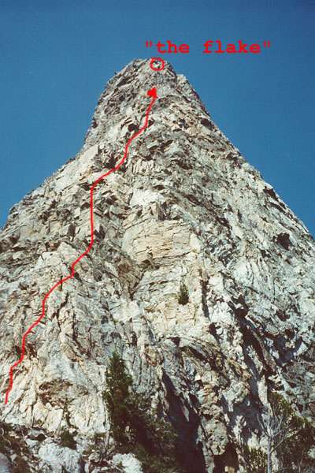
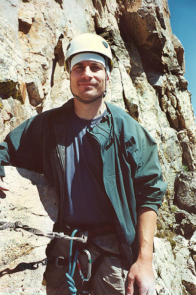
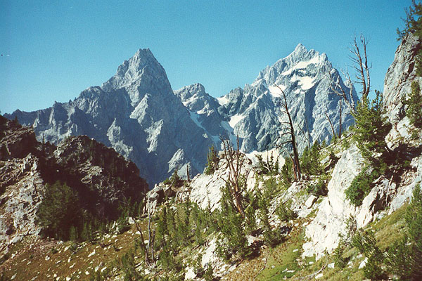
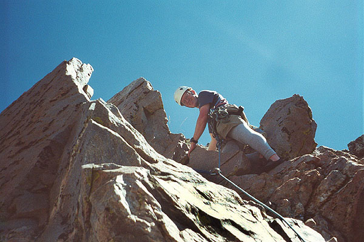
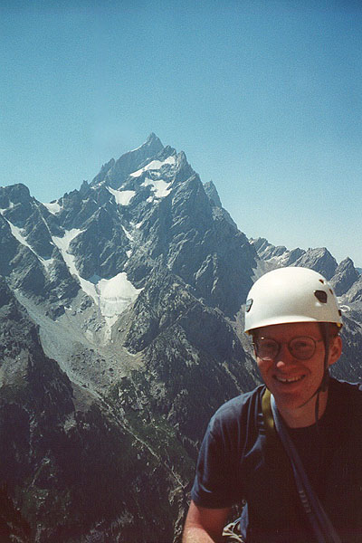

Symmetry Spire Southwest Ridge
- Southwest Ridge (5.7)
- August 8, 2000
Steve had picked out the Southwest Ridge, a historic climb with 6 or 7 pitches of 5.7 climbing. The climb was guarded by a long approach up a brushy slope with a prominent snowfield at the midpoint. Jeff suggested we take the 7 am boat, and if we hurried, we could make it back for the last boat at 6 pm. We did this, getting on the Jenny Lake shuttle with a gaggle of climbers making for other routes in the area, such as Cube Point, Baxter’s Pinnacle and the Guide’s Wall. Happily, we were alone in our choice of destination. We easily climbed out of the forest into a brushy talus field. Here, a short 4th class climb got us above a headwall, and onto a small trail traversing onto the desired slope above a cliff band. We were puzzled as we connected with the creek there, noticing a large, well-trodden trail coming to meet us from the edge of the cliff band. Huh? We resolved to follow it down later. The view was great, and the rocky gully we ascended wasn’t as bad as it looked from the boat. Finally, we spotted a cairn, and exited the gully on the right, eventually losing all traces of trail. We sidehilled up dirty slopes, enjoying the occasional level boulder. Finally, just below a notch dividing Storm Point from Symmetry Spire, we turned right and easily found the base of the route.





We rested, roped up, and scrambled up to the first belay. I had to climb back down to my pack three times, once for water, once for the route topo, and once just to maximize wasted time! The first lead was easy, and the rock solid. It led to a tiny notch below a steep headwall with a beautiful short crack. I built an anchor here, and Steve followed. This whole climb was full of fixed Camelots, shoved with great earnestness as deep into cracks as possible. Often, my anchors made handy use of these impromptu, albeit bomber, pieces. The next lead had a hard start on the short crack, but it was great fun. Moving up on the ridge, we got to enjoy increasing views of the lake, Mt. Owen and Mt. Teewinot. A few birds flitted above and below.
The next two pitches weren’t very memorable, but the final two pitches were spectacular. Each of them is often done as two pitches each, but with our 60 meter rope, we had no problem combining. First we encountered “The Nose,” with a few stiff 5.7 moves protected by ancient iron pitons. It was a sandy, Gandalfian nose about 20 feet high. Great fun with careful foot placements. The harder move of the pitch was getting to a big ledge, and continuing on black, steep, blocky rocks above. The exposure here was great, and Steve looked very tiny directly below. A strenuous move got me onto the rock, then delicate work avoided the overhangs and piles of loose rock. Finally, practically out of gear, a face climb that reminded me of the upper Castle in Tumwater Canyon led to a large ledge. I was happy for a single fixed pin on that face. Steve loved that pitch, and we were both raving about the joy of this climb now. The final pitch looked intimidating, but a 5.6 ramp led up and right to a belay ledge. Continuing on, I reached “The Flake”, a large granite envelope, which I licked on the left side, finishing with a hand traverse and a mantel. We smiled at the world below, and did some roped and unroped scrambling to a notch below the true summit.
We had expected to go on to the summit via scrambling, but the many rappel slings here, and the steep, loose wall above convinced us to rappel. A man appeared at a saddle below, and verified that our single rope reached the bottom. After more scrambling, we reached a notch, and talked with the local man there. He was very nice, although he warned us that because we were “tourists,” some locals (not him of course) might have said the ropes REACHED, when they DIDN’T. If you get his meaning. We said our goodbyes, sadly aware of people again, and their various foibles. The loose gully went well, and once we reached our packs, we got some resolve to make the last boat. This time, we followed a wide trail down. It was just above the gully we climbed up, and much better as a descent. We followed it over the cliffy headwall, finding it angled left, cleverly staying above the steep bits. Finally, we came to our 4th class climb from the morning, finding that’s where we’d made a wrong turn. (near the top of the climb, make a sharp LEFT, don’t go STRAIGHT AHEAD into a shallow gully like normal people).
We ran willy-nilly for a while, then pounded pell-mell down the trail, reaching the boat dock at 5:45. Sadly, we found a welter of screaming children and huffing tourists waiting in a quarter-mile-long line. Against our better instincts (we’d worked so hard for that boat), we got in line, shuffling aboard sometime after 7:00. So this was where all the people were!